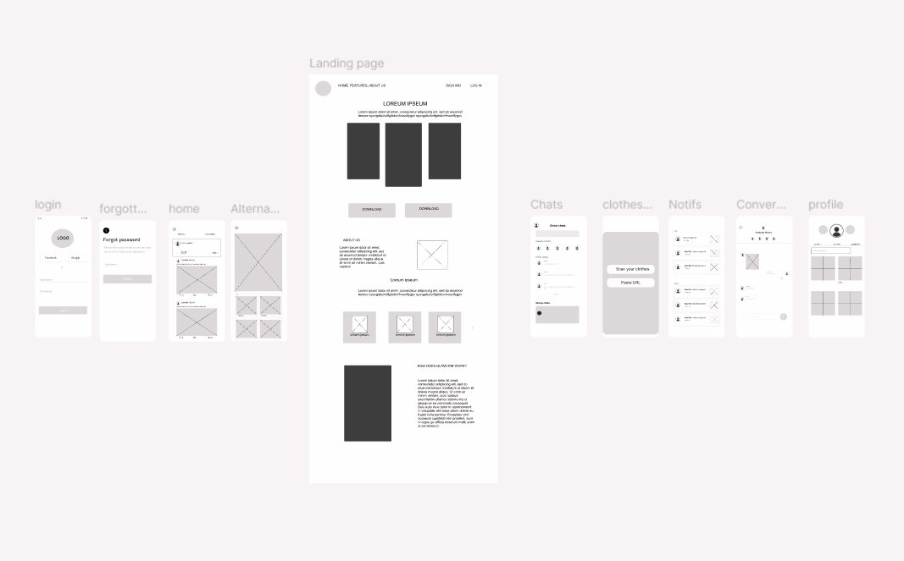

A fashion innovation app for sustainable living
Glamcrib is a school project focused on sustainable fashion. The app helps users make smarter, eco-friendly fashion choices by tracking outfits, planning purchases, and reducing waste. The goal was to explore innovative ways to make fashion more sustainable and create a platform that is both practical and visually appealing.
The project began with observing our own and others’ buying habits and conducting research on sustainable fashion. Using the design thinking process, we empathized with users, defined the key problem to tackle, and explored multiple concepts. This stage helped us identify opportunities and focus on a solution that encourages thoughtful fashion choices. By analyzing real-life shopping behavior and sustainability challenges, we were able to ground the concept in real user needs rather than assumptions. This research phase was essential in shaping the direction of the project.

Once the concept was chosen, we developed the app step by step. We created branding elements, designed low-fidelity wireframes, then refined them into mid- and high-fidelity prototypes. Finally, we translated the designs into a working app, ensuring a smooth user experience while keeping sustainability at the core of the project.
Throughout the design process, I made several deliberate choices to keep the app both user-friendly and sustainable in its mindset. I opted for a clean and minimal interface to reduce visual clutter and help users focus on their outfits and choices. Soft colors and simple typography were used to create a calm and approachable feel, reinforcing the idea of mindful consumption. Each feature was designed with purpose, avoiding unnecessary elements and focusing on functionality that genuinely supports sustainable fashion habits. These decisions helped create a product that feels intuitive while aligning with the core values of the project.
This project helped me better understand the importance of designing with intention. One of the main challenges was translating an abstract concept like sustainability into concrete features that users would actually engage with. Through testing and iteration, I learned how small design choices can have a big impact on usability and user behavior. I also gained valuable experience working with wireframes and prototypes, gradually refining ideas based on feedback and insights. If I were to continue developing this project, I would focus more on user testing and data-driven improvements. Overall, this project strengthened my skills in UX design, problem-solving, and web-based presentation.